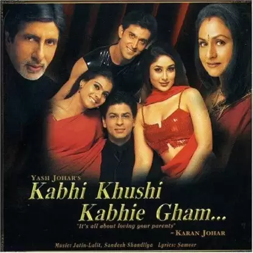

Bajirao Mastani (2015)

Bajirao I, who fought over 41 major battles and several lesser ones, was reputed to have never lost any of them. Bajirao is described as "RANMARD" a man made of and for the battlefield. Bajirao told his brother "Remember that night has nothing to do with sleep. It was created by God, to raid territory held by your enemy. The night is your shield, your screen against the cannons and swords of vastly superior enemy forces." A born cavalry leader, Bajirao was unequaled for the daring and originality of his genius. Mastani, the fabled warrior princess, was the daughter of Raja Chattrasal and his Persian wife Roohani Begum. An expert dancer, singer, and warrior, Mastani is sent to battle at the head of the Bundelkhand army. A chance meeting on a battlefield where they fight on the same side puts Bajirao and Mastani on a course of passionate love that is unstoppable by their families, by war, or by death itself.
Kabhi Khushi Kabhie Gham...(2001)
Yashvardhan Raichand lives a very wealthy lifestyle along with his wife, Nandini, and two sons, Rahul and Rohan. While Rahul has been adopted, Yashvardhan and Nandini treat him as their own. When their sons mature, they start to look for suitable brides for Rahul, and decide to get him married to a young woman named Naina. When Rahul is told about this, he tells them that he loves another woman by the name of Anjali Sharma. Yashvardhan decides to meet with the Sharma family, and finds out that they are middle-classed, unsophisticated, and will not be able to it into his family circle, as a result he refuses to permit Rahul to marry Anjali. A defiant Rahul decides to leave, gets married to Anjali, without his foster parents blessings, and re-locates to London, England, where Anjali's unmarried sister, Pooja, also lives. Rohan, who was studying in a hostel, returns home to find that Rahul is no longer living with them, and he also discovers that while outwardly his dad is not interested in seeing Rahul get back, Nandini wants the family back all together for all happy and sad moments. Rohan also misses Rahul a lot, and decides to travel to London in order to try and get Rahul to return home. Yashvardhan, is unable to prevent this, and as a result Rohan does travel to London, meets with Rahul, Anjali, and Pooja. Will the hurt and sorrow that Rahul experienced with his foster parents be erased and enable the family to be reunited, or will Rahul forget about the past, and continue to live his life without getting back to his roots and the family who brought him up, leaving Rohan to return alone?